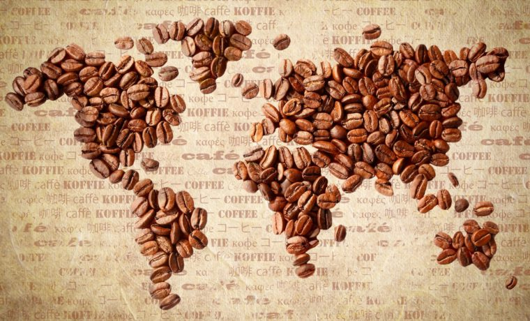

Você sabia? A origem do café

Segundo a lenda, o café foi descoberto na Etiópia por um pastor de cabras chamado Kaldi. Ele percebeu que seu rebanho ficava agitado depois de comer os frutos vermelhos de um arbusto e resolveu experimentar por conta própria.
Da Etiópia, o café viajou para a Península Arábica e, séculos depois, chegou às Américas — inclusive ao Brasil, que hoje é um dos maiores produtores do mundo.
"Um bom café não é feito às pressas. Ele é feito com tempo, escolha e cuidado." — ditado popular entre torrefadores
Aqui no Café Feliz, contamos um pouco dessa história em cada xícara que servimos.
Passe para conhecer!